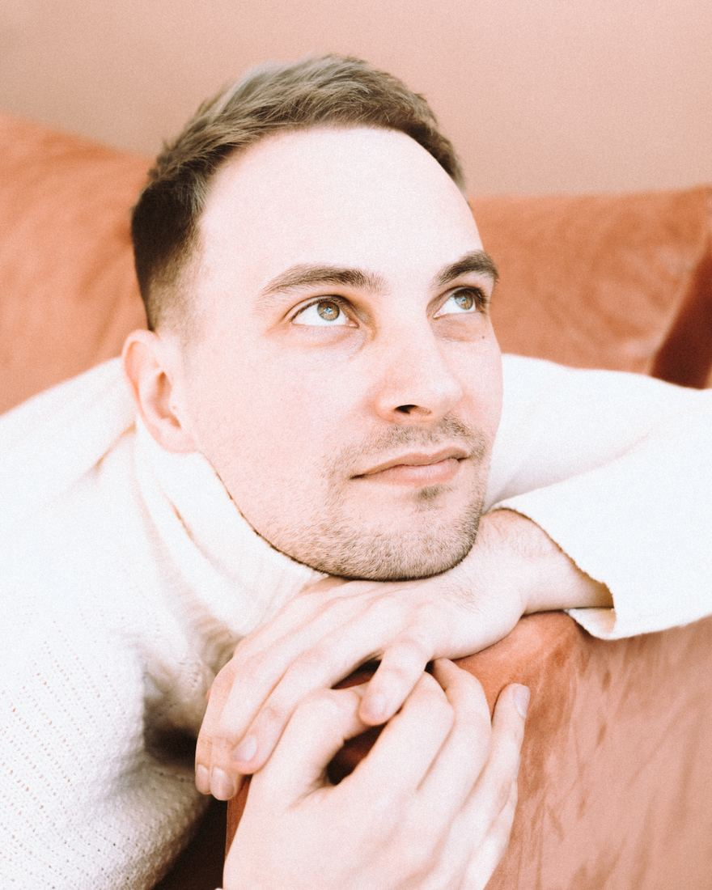
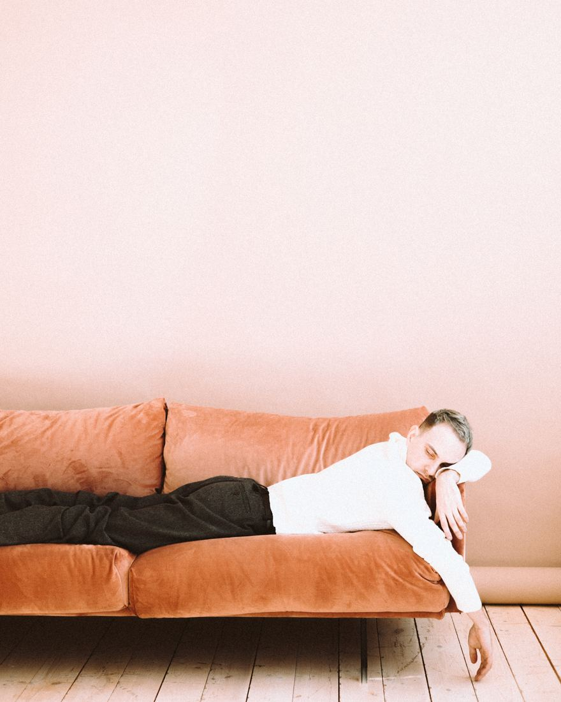
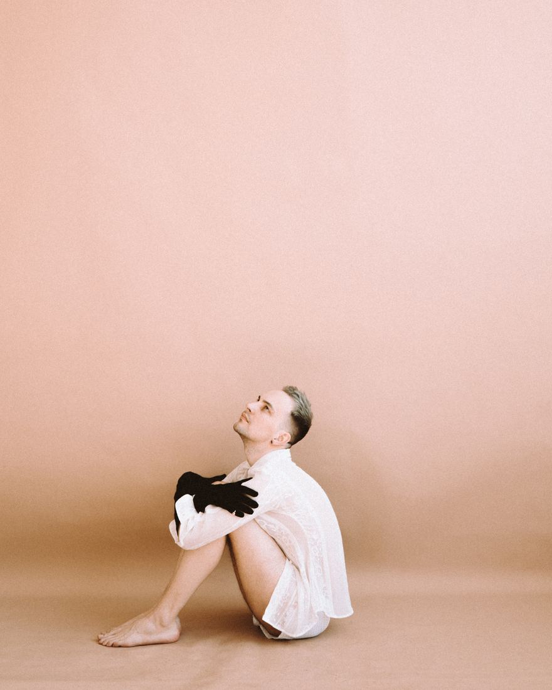
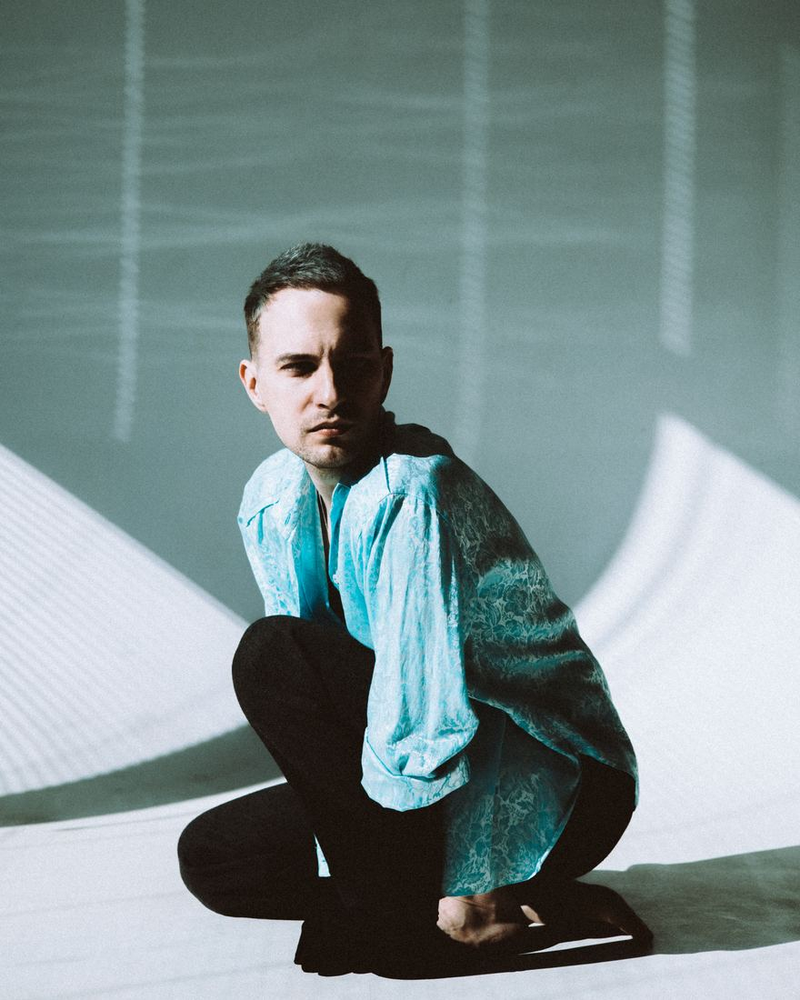
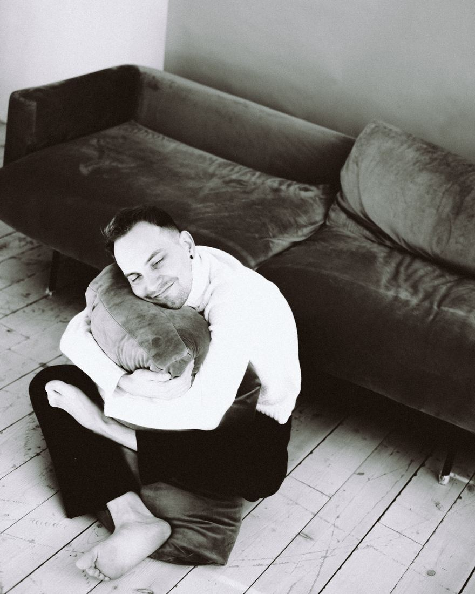
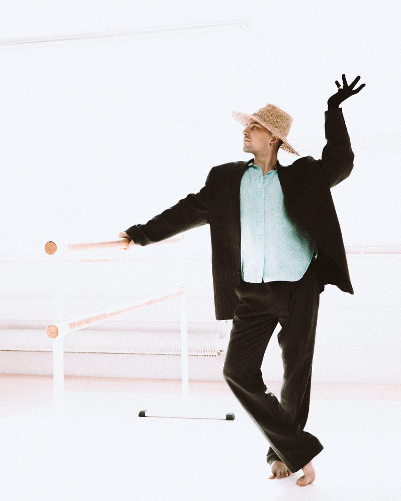
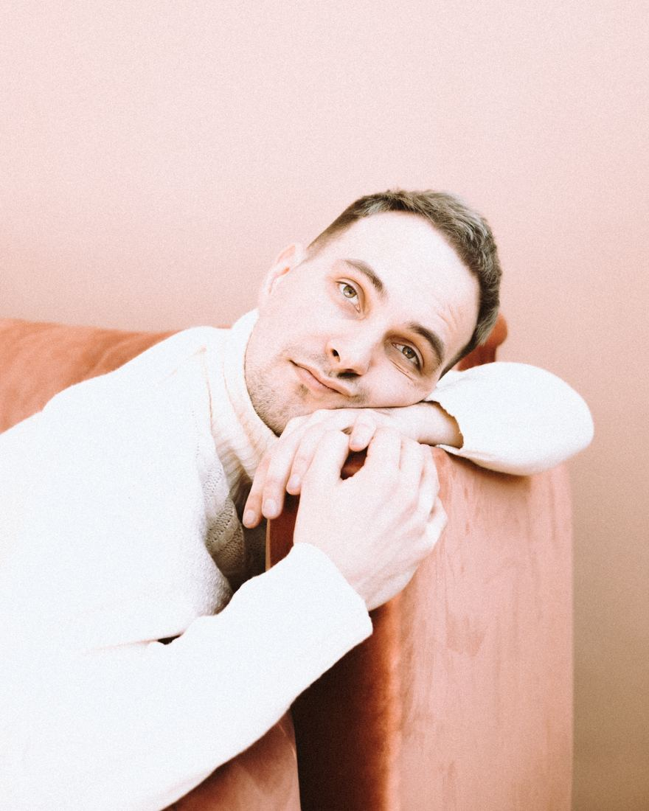

Один час в неделю я буду создавать для вас пространство, где можно выдохнуть. Я буду на вашей стороне и работать на ваши цели.
На наших встречах я не буду вас «исправлять». Мы будем искать способы сделать так, чтобы вам снова нравилось быть собой.
Мне интересно, как устроен человек. Что делает нас живыми, чувствующими, гибкими. Как мы можем принимать себя, оставаться в контакте с тем, что важно, и двигаться вперёд.
Я ценю честность, теплоту, простоту, глубину и тот творческий вайб, который появляется, когда ты просто настоящий.

ACT (терапия принятия и ответственности) — это метод психотерапии и определённое отношение к жизни.
Цель ACT — не избавить человека от боли, а помочь ему оставаться живым рядом с ней. Чтобы даже в трудные моменты можно было двигаться к тому, что важно, не теряя себя.
Вся наша работа будет строиться вокруг навыков психологической гибкости. Нажмите на любой угол шестиугольника.
Я работаю со взрослыми в индивидуальном формате.
Работа с навязчивыми мыслями, фобиями и хроническим беспокойством.
Сюда же относится эмоциональная неустойчивость: трудно управлять эмоциями, тревожно в ситуациях неопределённости. Учимся обращаться с гневом, стыдом и виной и глубже понимать свои чувства.
Тотальное отсутствие энергии, апатия, невозможность выполнять привычные дела. Ангедония: утрата интереса к хобби, работе, общению. Чувство пустоты, безнадёжности, хроническая печаль, проблемы со сном и аппетитом.
Одиночество, эмоциональная зависимость, выбор одного и того же типа партнёров, «абьюз», «токсичные отношения», конфликты, поиск партнёра или проживание расставания.
Взрослый СДВГ: трудно организовать время, дела откладываются на последнюю минуту, прокрастинация, забывчивость, неумение расставлять приоритеты, чувство вины за неэффективность.
РАС и другие особенности восприятия: сопровождение, социальная адаптация и принятие своей идентичности.
Внутренний критик, неустойчивая самооценка, неуверенность в себе. Когда кажется, что вы «недостаточно хороши», постоянно сравниваете себя с другими и боитесь осуждения.
А также сложности в вопросах гендерной идентичности или сексуальной ориентации, неприятие своего образа тела.
Трудные жизненные ситуации, утраты, горевание, потеря ориентиров, внутренние конфликты, личностный кризис. А также всё, что связано с эмиграцией: от стресса перед переездом до поиска себя в новой стране.
Сюда же относятся выгорание и начало практики: синдром самозванца, страх проявиться, вредный перфекционизм, трудно адаптироваться к изменениям. Восстанавливаем мотивацию и ищем своё дело.
Живёте в постоянном ожидании следующего приступа, медицинские обследования не дают ответов, вы боитесь лишний раз пошевелиться, чтобы не спровоцировать боль, и из-за этого ваша жизнь сужается до размеров дивана.
Есть две темы, в которых я сейчас повышаю квалификацию:
В этих темах я работаю под наблюдением опытного супервизора: разбираю с ним нашу работу. Это значит, что вы получаете помощь, а я одновременно расту как специалист в этой теме.
Первые 10 встреч стоят полцены, 2000 ₽ вместо 4000 ₽. Важное условие: эти 10 встреч обязательно записываются на видео. Запись нужна только для разбора работы с супервизором. С 11-й встречи цена обычная, 4000 ₽.
Если вам такой формат подходит, напишите мне, и мы обсудим всё подробно до начала.

Если нужно разобраться в конкретной ситуации «здесь и сейчас», взглянуть на проблему под другим углом или получить профессиональную обратную связь по вашему состоянию.
Я не дам совета «как жить», но помогу структурировать хаос и наметить возможные пути.
Это одна длинная встреча на 2 часа. Времени хватит, чтобы спокойно рассказать всё, что важно, вместе разобраться и уйти с понятными следующими шагами.


Если ваша цель — глубокие внутренние изменения, выход из повторяющихся сценариев и выстраивание жизни, которая вам по-настоящему нравится.
Здесь мы будем работать системно, шаг за шагом укрепляя вашу устойчивость и психологическую гибкость.
Длительность сессии 50–60 минут. При длительной работе мы обычно встречаемся раз в неделю в закреплённое время. Это оптимальный ритм: у вас есть время перенести опыт из кабинета в реальную жизнь, но при этом мы не теряем фокус. Когда вы почувствуете, что твёрдо стоите на ногах, мы можем встречаться реже.
Обычно я начинаю с прояснения, как вы и где находитесь «здесь и сейчас». Мы исследуем прошедшую неделю, разбираем конкретные ситуации: где вы застряли, где поддались старым привычкам, а где смогли поступить по-новому. Иногда клиент заведомо выбирает «просто пожаловаться» без какого-либо анализа. Так, конечно же, тоже можно!
По возможности мы делаем практические упражнения прямо на сессии, а в конце договариваемся о том, что вы попробуете сделать по-другому до следующей встречи. Каждая сессия уникальна и складывается по ходу общения.
Терапия — это не пассивное созерцание, это работа, за которую мне вы платите деньгами, а себе своим временем, усилиями и честностью.
Я не могу полностью отвечать за ваш результат, но могу за качество процесса.
В терапии нет гарантий «полного исцеления от всех бед». Жизнь моих клиентов не стала «идеальной», у них всё ещё бывают плохие дни. Но вот как это бывает:
Даже самый опытный психолог может просто не совпасть с вами по темпераменту или стилю общения. Это нормально. Если «химии» не случилось, я могу порекомендовать вам проверенных коллег.
Бывает, что в разговоре становится ясно: проблема решается иначе. Если я увижу, что сессии со мной сейчас не самый эффективный путь для вас, я честно об этом скажу.
Иногда человеку нужна не часовая сессия со мной, а просто хороший массаж и здоровый сон.
Я пишу о любви, отношениях, границах и о том, как жить рядом с трудным. Каждая статья — живой сайт, который можно читать, слушать и смотреть.
Бакалавр психологии (Московский институт психоанализа), член АКПН и больше двадцати курсов: ACT, СДВГ, поведенческая психология, психосоматика, работа с подростками.

Напишите мне, как вам удобнее. Вместе поймём, с чего начать.
Отзывы обо мне можно почитать на B17. Перед началом работы прочитайте информированное согласие.
Если вам сейчас очень плохо и есть мысли причинить себе вред, пожалуйста, не ждите записи. Позвоните в экстренную службу вашей страны (112 в Грузии и России) или попросите близкого человека побыть рядом.
